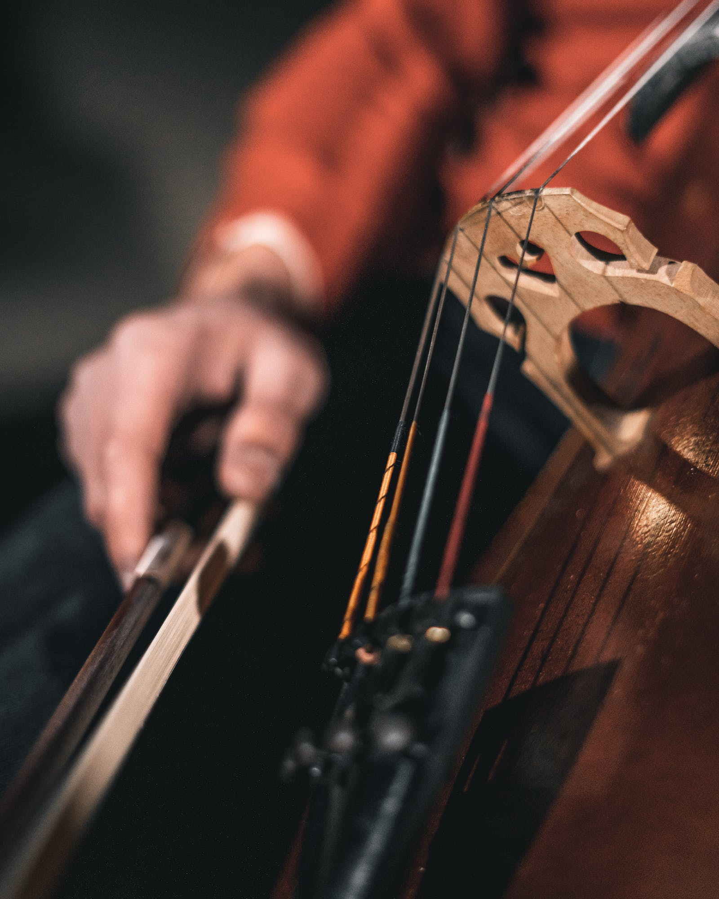

Researchers from Pavia University, Italy, found that music with quicker tempos helped people breathe better, making sure their heartbeat was up.

According to researchers from the University of Groningen, listening to happy or sad music can even change the way we perceive the world. On a bad day, make sure you listen to some happy music.
According to University of Michigan Health System, music ushers activity in the area of the brain that releases the 'pleasure chemical' dopamine during sex and eating.
A research, published in the journal Neuropsychological Rehabilitation, observes that music can facilitate memory recalling in people with severe brain injury.